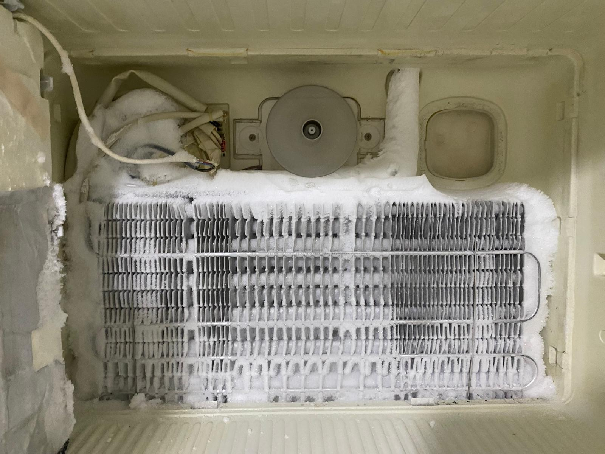
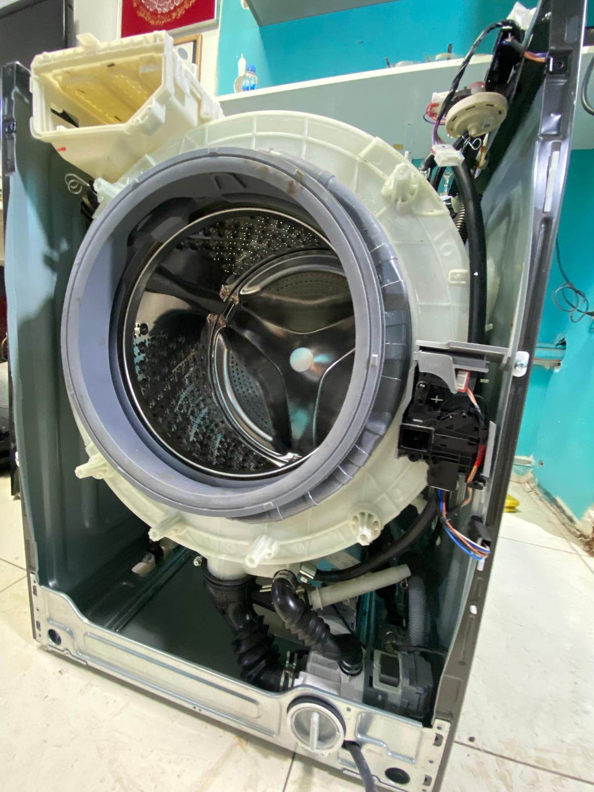
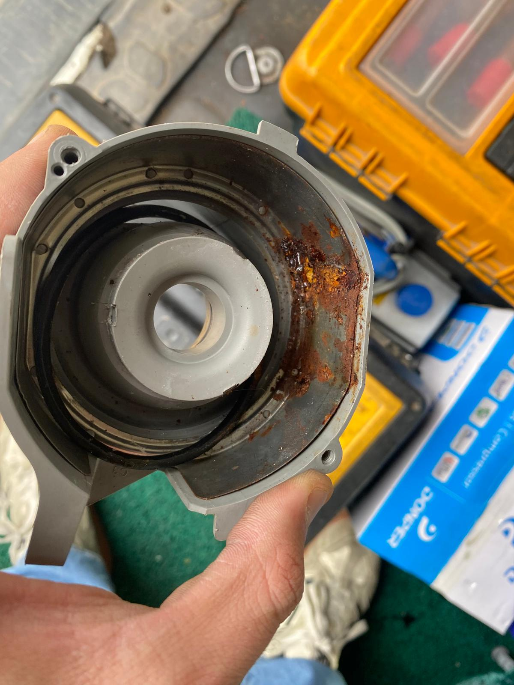

TEKNİK SERVİS
Kurtköy Buzdolabı Servisi
Soğutmama, aşırı buzlanma, su akıtma, kompresör ve elektronik kontrol sorunlarında teknik destek.
Hizmeti İncele →Kurtköy’de beyaz eşya servisi arayan müşteriler için cihaz bazlı servis seçeneklerini bir araya getirdik. Buzdolabı, çamaşır makinesi, bulaşık makinesi, kurutma makinesi, fırın ve diğer cihazlar için ilgili teknik servis sayfasından arıza türünü inceleyebilirsiniz.
Kurtköy ve yakın çevrede cihaz türünü seçerek ilgili teknik servis sayfasına geçebilirsiniz.

Soğutmama, aşırı buzlanma, su akıtma, kompresör ve elektronik kontrol sorunlarında teknik destek.
Hizmeti İncele →
Dönmeme, sıkmama, su alma, kapak, kazan, pompa ve elektronik kart sorunlarında teknik destek.
Hizmeti İncele →
Su akıtma, yıkamama, tahliye, pompa, pervane ve elektronik kontrol sorunlarında teknik destek.
Hizmeti İncele →
Kurutmama, ısıtmama, aşırı ses, filtre ve program sorunlarında teknik destek.
Hizmeti İncele →
Soğutmama, aşırı buzlanma, fan ve elektronik kontrol sorunlarında teknik destek.
Hizmeti İncele →
Isıtma, rezistans, termostat, ateşleme ve panel sorunlarında teknik destek.
Hizmeti İncele →
Temsilî görsel • gerçek işletme servis çalışması değildir.
Bakım, temizlik, performans kontrolü ve uygun arızalarda teknik destek.
Hizmeti İncele →
Temsilî görsel • gerçek işletme servis çalışması değildir.
Isınma, sıcak su, basınç ve genel çalışma sorunlarında teknik destek.
Hizmeti İncele →Kurtköy çamaşır makinesi servisi, Kurtköy buzdolabı servisi ve diğer cihaz hizmetlerinde cihaz türünü ve arıza belirtisini paylaşmanız, doğru servis sayfasına yönlendirme yapılmasını kolaylaştırır.
Kurtköy, Yenişehir, Şeyhli, Harmandere, Çamlık ve Sülüntepe çevresinde servis uygunluğu telefon veya WhatsApp üzerinden teyit edilebilir.
Kurtköy, Yenişehir, Şeyhli, Harmandere, Çamlık ve Sülüntepe çevresinde servis uygunluğu telefon veya WhatsApp üzerinden teyit edilebilir.
Cihaz türü, marka-model, arıza belirtisi ve mahalle bilgisini iletin. Uygunluk ve planlama hakkında bilgi verelim.
☎ 0542 891 22 25Servis talebi oluşturmadan önce sık sorulan soruların kısa yanıtlarını inceleyebilirsiniz.
Buzdolabı, çamaşır makinesi, bulaşık makinesi, kurutma makinesi, derin dondurucu, fırın ve ocak için cihaz bazlı teknik servis seçenekleri sunuluyor. Klima ve kombi için ilgili servis sayfaları da bulunuyor.
Cihaz türü, marka-model, arıza belirtisi ve mahalle bilgisini telefon veya WhatsApp üzerinden paylaşarak uygunluğu teyit edebilirsiniz.
Kurtköy, Yenişehir, Çamlık, Şeyhli ve yakın çevrede servis planlaması telefon veya WhatsApp üzerinden teyit edilir.
Telefon veya WhatsApp üzerinden cihaz bilgilerinizi paylaşabilirsiniz.